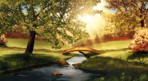
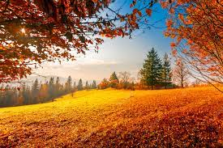
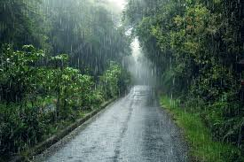

Summer means happy times and good sunshine.

Autumn is just full of the most beautiful, stunning natural scenes.

Rain is not only drops of water.
It is the love of the sky for the earth.
Winter is the time for comfort, for good food and warmth.
"Nature is not a place to visit, it is home." –Gary Snyder. "In every walk with nature one receives far more than he seeks." –John Muir."The tree which moves some to tears of joy is in the eyes of others only a green thing which stands in the
way.
Some see nature all ridicule and deformity, and by these I shall not regulate my propositions.
And some see no nature at all. But to the eyes of the man of imagination,
nature is imagination itself." –William Blake
Call to action! it is time!
Click the button over there to know more about our beautiful nature!